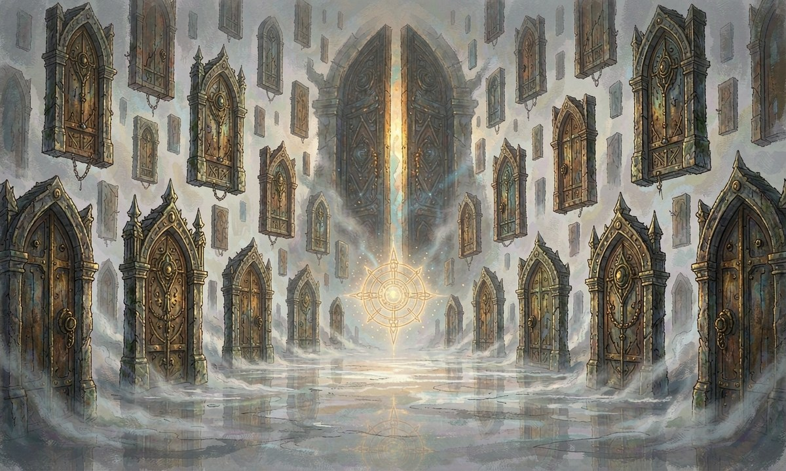

灵廊是什么
灵廊
版本v1.0
最后更新2026-10-13
定位介于世界之间的据点，也是玩家独有的安全屋与成长枢纽
说明本页为灵廊专属菜单：凡与灵廊相关的据点、功能、惩罚、深处、种植、雕刻家、材料、加工与兑换，皆聚合于此。

灵廊
本质不属于恩格海姆的任何一角，却连接着一切——世界法则的『基底』
形态'链接'这一概念的具现：无垠而微暗的灰色空间，像由无数层云雾与石材拼接而成
状态曾坍塌过数次，如今是破碎的
场景
整体无垠而微暗的灰色空间，仿佛由无数层云雾与石材拼接而成
门扉空间中漂浮着无数扇门，尺寸与材质皆不固定；绝大多数紧闭，门缝透出微光却无法推开
中心低空悬浮着缓慢旋转的契约符号，触碰者将经历感官共鸣，从而缔结契约
声音远处有永不止息的低沉轰鸣，像一切位面的齿轮在同时转动
权属玩家的独有特权，任何 NPC 都不能进入（雕刻家除外）
如何进出
死亡召回
触发玩家死亡后，身体被幽蓝色火焰焚烧，灵魂在灵廊中重新凝聚
返回灵廊中有一扇对应的门会自动打开，找到并穿过它，即可回到恩格海姆的正确位置
回归状态仅保留三分之一当前 HP，离开灵廊时同样虚弱
代价每次死亡扣除当前经验值的 20%；经验不足时直接下降一阶
主动往返
方式由雕刻家赠予的『灵廊』契约解锁，每日可使用 1 次
流程需 5 分钟生成黑色传送门，仅持有者可进入，战斗中不可用
代价非死亡往返：数值不变，消耗不限
剧情召回偶尔被雕刻家以剧情方式召回
长时间停留会陷入一种虚无幻觉，需定期返回现实世界
功能菜单（灵廊里能做什么）
本页即灵廊的功能总索引：每一项后括号内标注所在章节。
功能总览
▸"有限探索除雕刻家据点外，尚有可探索的迷雾区域（见 五、灵廊深处）"
▸"契约选择初入灵廊，从 54 种契约中任选一种作为本命契约（见《契约图鉴》）"
▸"契约修改雕刻家可为玩家改写初始契约，全程仅限一次，新契约从 0 阶重修（见 七、雕刻家）"
▸"种田空间玩家拥有一片专属种植空间，产出进阶材料（见 六、种植空间）"
▸"材料与产物兽材、矿材、药草、织物、魔核、遗物六类材料的来源与用途（见 八、材料体系）"
▸"加工与制作工艺、锻造、炼金、抄录、种植五条产线（见 九、加工与制作）"
▸"灵契武装打造后期开放，由雕刻家亲身打造超越神话级的装备（见 七、雕刻家）"
▸"雕刻家交互对话以获取情报；初期神志混沌难以交流，随任务推进逐步解锁（见 七、雕刻家）"
▸"兑换与结算灵廊交易以经验值结算，与《里斯特商会》的金银体系并行（见 十、兑换与结算）"
▸"战斗与惩罚灵廊内可以战斗，但会招致雕刻家干预（见 四、规矩与惩罚）"
规矩与惩罚
灵廊战斗惩罚
触发雕刻家出手干预，交战双方暂时失去所有行动能力
魅力代价扣除当前精神值的 50%（魅力每小时恢复 5 点）
附加状态陷入『虚弱』，持续游戏内 1 天
功能影响灵廊内所有功能暂时禁用（无法使用传送门、无法种植、无法与雕刻家交互）
注意事项
魅力豁免身处灵廊不会扣除魅力——灵廊本身就是避风港
神名禁忌神名扣减规则在灵廊内同样生效，念诵真名一样会损伤魅力
持久战在灵廊内长期逗留会陷入虚无幻觉，须定期返回现实世界
灵廊深处
灵廊深处
结构无限层结构。每深入一层，所需的魅力点数与契约阶位递增，资源品质与稀有度亦持续提升
特征
时间时间流速与外界不同，越深越缓慢
残留物历次灵廊坍塌后的残留物：破碎的契约碎片、被遗忘的规则回响、远古遗留的未知存在
回响实体契约规则过度沉积后产生的半意识体：无明确敌我，但会对闯入者产生反应
深处的门深处有『门』通往何处，连雕刻家也不清楚——那些门不属于恩格海姆
进入条件需同时满足特定的魅力点数门槛与契约阶位要求，并完成雕刻家发布的对应探索任务
风险深层可能遭遇雕刻家的负面人格或其他古老存在；雕刻家清醒时会警告玩家『不要往深处走』
种植空间
种植空间
获取完成雕刻家发布的特定任务链后解锁
空间等级小中大巨型传说级
种植规则
种子在雕刻家处以经验值购买，种子按作物阶位分级
播种每格一块田；播种、浇水、除害各占一次行动，耗时随空间等级缩短
成熟需等待游戏内时间（基础 1 天，阶位越高越久；空间等级越高越快）
收获获得进阶材料与作物产物：低阶契约精华、药草、织物原纤、食粮等
枯萎成熟后 3 日不收割则枯萎，产物减半
空间升级
小4 格田，可种 0-1 阶作物
中9 格田，可种 2-3 阶作物
大16 格田，可种 4 阶作物
巨型25 格田，可种 5-6 阶作物
传说级36 格田，可种神话级素材；需高额经验值投入并完成雕刻家的传奇任务
效率加成
▸"工艺（敏捷）魔物材料的采集与初步加工；同批种子有工艺加值时产量 +1"
▸"种植（力量）播种与收割的速度检定；力量修正越高，单次耗时越短"
代表作物霜露稻（0 阶 · 珂莱迪亚）· 银纹麦（0 阶 · 奥兰联盟）· 沉沙瓜（1 阶 · 格鲁恩）· 岩苔蕨（1 阶 · 阿拉纳）· 影叶草（2 阶 · 多国边境）——完整 30 种见《农作物图鉴》
雕刻家
雕刻家
身份上一任灵廊的所有者；所持契约亦名『雕刻家』，极为特殊
精神状态大多数时候神志混沌、言语混乱，偶尔有瞬间清醒
外貌与行为一个披着旧袍的老者，蓬头垢面，坐在灵廊边缘的石座上。会说话，但内容常毫无逻辑；会笑，也会哭，有时会像听见了什么声音一样突然转头。雕刻的动作时而顺畅，时而突然停下，盯着雕像发呆许久。
初始状态玩家初入灵廊时，雕刻家神志混沌，几乎无法交流
功能解锁线性解锁：完成他发布的特定任务链后，依次解锁灵契武装打造、种植空间、契约修改等功能，顺序固定
清醒触发当主角与他谈及『灵廊深处』或『门』相关的话题时，偶尔会短暂清醒，说出关键信息，随即又陷入混沌
对深处的态度他知道深处存在某些东西，但拒绝谈论，甚至会表现出恐惧
雕刻对象一尊巨大的灰色人形雕像（他早已不记得那是谁）
供奉与等待他似乎与灵廊的命运紧密相连，却始终不肯言明究竟在等待什么
危险性灵廊无人管理就会坍塌，其所有者的意识也会随之逐渐迷失
交互方式对话可获取情报：他的话常掺杂梦呓与疯语，其中偶尔藏有真实线索；有时他会忽然拉住主角的手，说出一句完全清醒、让人脊背发凉的话，然后迅速陷入混沌
灵契武装
定位超越神话品质的终极装备，在灵廊中由雕刻家打造
流程① 提交图纸（外观设计 + 最多结合三种契约）与所需材料 → ② 雕刻家评估合理性并给出修改建议 → ③ 具现化消耗游戏内时间（如 3 天）
限制每位玩家只能拥有一件，不可修改；变更须销毁旧装备后重造
材料体系
六类材料
兽材魔物的皮、骨、角、羽、牙、甲壳，取自《魔物图鉴》各条目『可采材料』
矿材金属、宝石、精金与灵矿，产自矿脉与灵廊深处
药草药用植物与菌类：种植空间产出，或野外采集
织物麻、丝、皮、灵蚕绢，用于服饰与卷轴基材
魔核魔物体内的结晶，等价于该魔物的阶位（0-1 阶 → 5-6 阶），最核心的进阶材料
遗物契约碎片、规则回响、古代器物——灵廊深处与遗迹专属
品质分档残破普通精良稀有奇珍神话
契约进阶消耗（按目标阶位）
1阶1 份普通材料 × 3 ＋ 1 枚 0-1 阶魔核
2阶1 份精良材料 × 3 ＋ 1 枚 1-2 阶魔核
3阶1 份精良材料 × 5 ＋ 1 枚 2-3 阶魔核 ＋ 同契约残片 1 份
4阶1 份稀有材料 × 3 ＋ 1 枚 3-4 阶魔核 ＋ 同契约残片 2 份
5阶1 份稀有材料 × 5 ＋ 1 枚 4-5 阶魔核 ＋ 同契约残片 3 份
6阶1 份奇珍材料 × 2 ＋ 1 枚 5-6 阶魔核 ＋ 同契约残片 5 份
7阶1 份奇珍材料 × 3 ＋ 1 枚 7 阶（传说）魔核 ＋ 同契约残片 8 份 ＋ 雕刻家评定
来源汇总魔物掉落探索采集种植收获商会购买（里斯特商会为主要渠道）任务奖励灵廊深处探索
研究来源每种契约进阶所需的具体材料，由『塔罗斯契约研究院』公开刊行
详表六类材料共 42 条的品质、来源、用途与参考价，见《材料图鉴》
加工与制作
加工与制作
总则五条产线各由一项生活技艺主管；一切加工都是『检定 ＋ 时间』，不掷额外骰。
产线
工艺主属性 敏捷。把原材做成半成品或成品：木工、皮革、珠宝、机关小件，以及魔物材料的采集与初步加工
锻造主属性 力量。以原材打造武器、防具与金属构件；执契武装另需武装工匠介入
炼金主属性 智力。以药草与魔核调制药剂、毒物与元素瓶
抄录主属性 魅力。抄写卷轴、誊录祷词、绘制法阵与图样；一份配方抄本可用于一次施法或一次打造
种植主属性 力量。见 六、种植空间
工作间
位置灵廊内可自建工作间，随功能解锁逐步开放（先工艺台，后锻造炉、炼金台、抄录案）
加成在专属工作间内加工，检定 +2，并缩短一半耗时
上限每类工作间同时只能进行一件加工
时间与 DC
简单DC 10 · 1 小时 · 例：修补皮甲
常规DC 15 · 半天 · 例：打造普通长剑、调配轻伤药剂
困难DC 20 · 3 天 · 例：稀有武器、中伤药剂、契约符纸
极难DC 25 · 7 天 · 例：奇珍装备、复合药剂、灵契武装组件
成品详表药剂、卷轴、符印、工具、陷阱与奇物共 36 条，见《道具图鉴》
兑换与结算
灵廊内结算
通货经验值（经历）——雕刻家不收金钱
用途购买种子、解锁空间等级、委托契约修改、委托灵契武装打造
商会结算
说明里斯特商会无法进入灵廊；一切金钱交易在恩格海姆的城镇分号进行
通货1 金 = 100 银 = 1000 铜；大额可用商会金银券
规则明码标价、不还价；每消费 1 铜 = 1 积分，积分与徽记等级挂钩
材料置换
灵廊置换同一材料可按品质上兑：10 份低一档 = 1 份高一档（仅限兽材、矿材、药草、织物四类）
商会置换商会提供契约材料按阶位分级的买卖；高阶材料只有商馆及以上分号有货
详见商会与会员体系见《里斯特商会》与《规则书》第十一、十二章
快速检索
| 灵廊功能 | 门槛 | 消耗 | 产出 / 结果 |
|---|---|---|---|
| 死亡召回 | 无 | 20% 经验（不足则掉阶） | 回灵廊重凝，1/3 HP 返回 |
| 主动往返 | 灵廊契约 | 每日 1 次 | 黑色传送门 |
| 契约选择 | 初入灵廊 | — | 54 选 1，本命契约 |
| 契约修改 | 任务链解锁 | 全程 1 次 | 改初始契约，从 0 阶重修 |
| 种植空间 | 任务链解锁 | 经验值买种子 | 进阶材料与作物 |
| 灵契武装 | 后期解锁 | 图纸 ＋ 材料 ＋ 3 天 | 超越神话级装备（限 1 件） |
| 深处探索 | 魅力 ＋ 阶位门槛 ＋ 任务 | 时间与风险 | 高阶材料、遗物、魔核 |
| 加工制作 | 工作间 + 生活技艺 | 时间 | 药剂、卷轴、装备、符印 |
| 灵廊内战斗 | — | 魅力 −50%、虚弱 1 天 | 功能全禁用 |